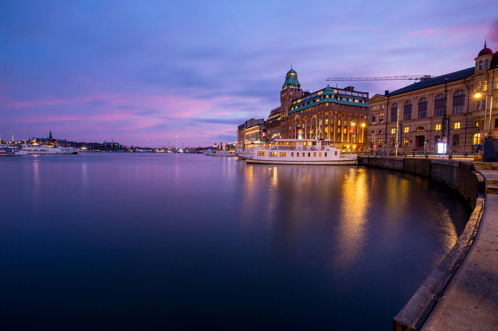

01
Design
Layout, typografi och bild som passar verksamheten. Ingen mall.


Vi skapar skräddarsydda webbplatser som hjälper er att exponera verksamheten.
Calyx·Hōrai·Hyperborea
Exempelsida: Hōrai, Asian fusion-koncept
Webbdesign, design och system. Allt på ett ställe.
Layout, typografi och bild som passar verksamheten. Ingen mall.
Handskriven kod som laddar snabbt och är enkel att ändra i.

Bokning, betalning och kunddatabas när verksamheten behöver det.